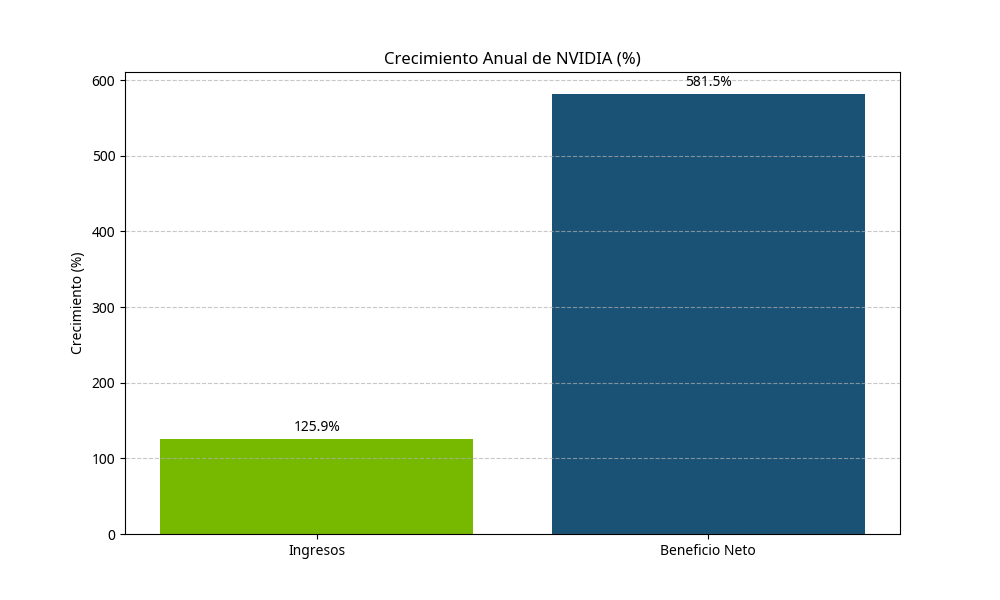
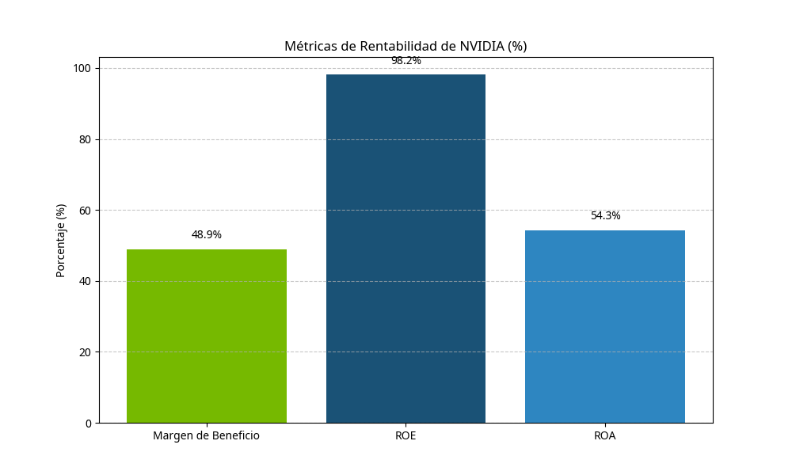
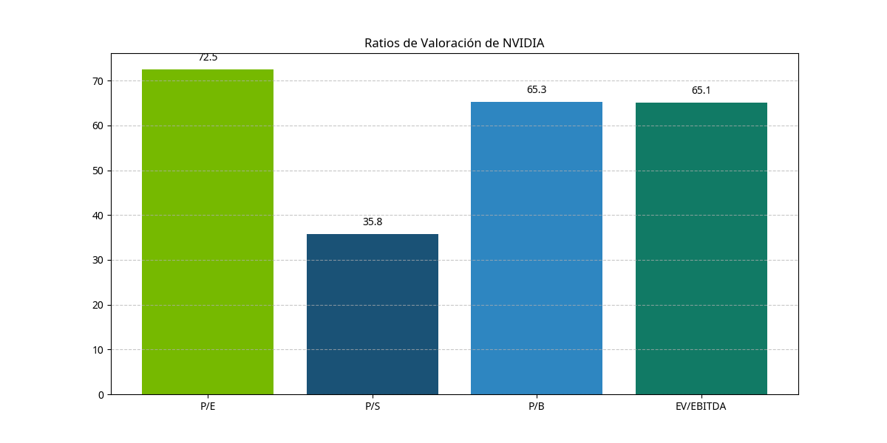

Perfil de la Empresa
NVIDIA Corporation es una empresa tecnológica multinacional estadounidense que diseña unidades de procesamiento gráfico (GPUs) para los mercados de gaming y profesional, así como unidades de sistema en chip (SoCs) para el mercado móvil y automotriz. La empresa se ha transformado de ser principalmente un proveedor de GPUs para gaming a convertirse en una plataforma de computación acelerada y empresa de inteligencia artificial.
NVIDIA ha expandido significativamente su enfoque hacia la inteligencia artificial, el aprendizaje profundo, la computación de alto rendimiento y los centros de datos, posicionándose como líder en la infraestructura tecnológica que impulsa la revolución de la IA.
Ingresos (TTM)
Crecimiento anual: +125.9%
Beneficio Neto (TTM)
Crecimiento anual: +581.5%
Margen de Beneficio
Muy superior a la media del sector
Flujo de Caja Libre (TTM)
Generación de efectivo excepcional
Crecimiento Financiero
El gráfico muestra el crecimiento anual de ingresos y beneficio neto de NVIDIA. El crecimiento explosivo refleja la fuerte demanda de sus productos, especialmente en el segmento de IA.
Métricas de Rentabilidad
El gráfico muestra las principales métricas de rentabilidad de NVIDIA. El margen de beneficio, ROE y ROA son significativamente superiores a la media del sector, demostrando la eficiencia operativa y la ventaja competitiva de la empresa.
Ratios de Valoración
El gráfico muestra los principales ratios de valoración de NVIDIA. Los múltiplos elevados reflejan las expectativas de crecimiento futuro y la posición dominante de la empresa en mercados de alto crecimiento.
Ventajas Competitivas
Liderazgo en GPUs
NVIDIA es el líder indiscutible en el mercado de GPUs, con una cuota de mercado dominante en segmentos de alto rendimiento. Esto le permite establecer estándares de la industria y mantener márgenes superiores.
Ecosistema CUDA
Su plataforma de computación paralela CUDA ha creado un ecosistema completo de desarrollo que genera altos costos de cambio. Esto crea una barrera de entrada significativa para competidores y fideliza a desarrolladores.
Innovación en IA
NVIDIA ha posicionado sus GPUs como la infraestructura fundamental para el entrenamiento e inferencia de modelos de IA. Esto ha permitido a la empresa capitalizar el auge de la IA generativa y el aprendizaje profundo.
Diversificación de mercados
Expansión exitosa desde gaming hacia centros de datos, automoción, edge computing y otros mercados de alto crecimiento. Esto reduce la dependencia de un solo segmento y amplía las oportunidades de crecimiento.
Análisis Competitivo
| Competidor | Fortalezas | Debilidades |
|---|---|---|
| AMD | Competidor directo en GPUs, con productos Radeon y arquitectura RDNA. Ofrece alternativas más económicas. | Menor cuota de mercado en GPUs de alto rendimiento. Ecosistema de software menos desarrollado que CUDA. |
| Intel | Entrando en el mercado de GPUs discretas con Intel Arc. Enorme capacidad de fabricación y recursos de I+D. | Nuevo en el mercado de GPUs discretas. Problemas con el desarrollo y lanzamiento de productos competitivos. |
| Google (TPUs) | Desarrolla sus propios Tensor Processing Units (TPUs) optimizados para cargas de trabajo de IA. | Principalmente para uso interno en sus servicios cloud, no disponibles ampliamente para el mercado. |
| Startups de chips de IA | Empresas como Cerebras, Graphcore y SambaNova desarrollan chips especializados para IA. | Escala limitada, menor ecosistema de software y menor adopción en comparación con NVIDIA. |
Análisis de Valoración
Con un ratio P/E de 72.5, NVIDIA cotiza a una prima significativa respecto al mercado general y al sector tecnológico. Esta valoración refleja:
- Expectativas de crecimiento excepcional impulsado por la demanda de IA
- Posición dominante en un mercado con altas barreras de entrada
- Márgenes superiores a la media del sector
- Historial probado de innovación y expansión a nuevos mercados
Comparado con sus competidores directos, NVIDIA mantiene múltiplos de valoración más altos, justificados por su mayor crecimiento, mejores márgenes y posición de liderazgo en IA.
Justificación de la Valoración
La valoración actual de NVIDIA puede justificarse si:
- Mantiene su dominio en el mercado de GPUs para IA y computación de alto rendimiento
- Continúa expandiendo sus márgenes a medida que escala su negocio de centros de datos
- Logra monetizar efectivamente nuevas oportunidades en mercados emergentes como edge AI y automoción
- El mercado de IA continúa creciendo a tasas aceleradas durante los próximos años
Sin embargo, la valoración actual deja poco margen de error y asume una ejecución perfecta en un entorno competitivo cada vez más desafiante.
Conclusiones del Análisis Fundamental
NVIDIA presenta fundamentales excepcionalmente sólidos, caracterizados por:
- Crecimiento explosivo de ingresos y beneficios
- Márgenes de beneficio extraordinarios
- Posición financiera robusta con efectivo neto positivo
- Ventajas competitivas sostenibles
- Liderazgo en mercados de alto crecimiento como IA y computación acelerada
La empresa está bien posicionada para capitalizar tendencias tecnológicas a largo plazo, particularmente la adopción generalizada de IA en empresas y la creciente demanda de computación de alto rendimiento.
Sin embargo, los inversores deben considerar:
- Valoración exigente que incorpora expectativas muy optimistas
- Riesgos de competencia creciente de AMD, Intel y chips de IA especializados
- Posible ciclicidad en la demanda de infraestructura de IA
Desde una perspectiva fundamental, NVIDIA representa una empresa de calidad excepcional con un potencial de crecimiento significativo a largo plazo, aunque su valoración actual requiere un análisis cuidadoso del riesgo-recompensa para nuevas inversiones.